Thelio Mega (Parts & Repairs)
Many components in your Thelio Mega can be upgraded or replaced as necessary. This page uses photos of the the R4-N3 revision, which indicates:
- R4: The fourth AMD motherboard used in Thelio Mega.
- N3: Based on the third major revision of the Thelio Mega chassis.
- The Thelio Mega form factor is not currently available as a standalone Nebula chassis.
Minor case details may vary based on the production date of the unit, but screw counts, general component locations, and other details should remain the same unless otherwise noted.
Power the machine off, switch off the power supply, and unplug all peripherals before working with any internal components. Then, follow these step-by-step guides for instructions:
- Replacing the front accent strip
- Removing the top case
- Removing the side fan mount
- Replacing the side intake fans
- Adding/removing 2.5" storage drives
- Removing the GPU brace
- Removing the CPU duct
- Replacing a GPU
- Replacing the M.2 drives
- Replacing the CMOS battery
- Replacing the CPU fans
- Replacing the CPU cooler/thermal paste and CPU
- Replacing the RAM
- Opening the PSU chamber
- Replacing the bottom intake fan
- Replacing the power supply
- Removing the top crossbar
- Replacing the Thelio Io board
- Replacing the SATA backplanes
- Replacing the top I/O
- Troubleshooting the power button
Replacing the front accent strip:
Thelio Mega includes a customizable accent panel on the front of the case, which can be swapped to change the case's look and feel. The instructions for swapping the accent are also available in video form.
Tools required: None
Time estimate: 30 seconds
Difficulty: Easy ●
Steps to replace the front accent strip:
- Place the Thelio on the edge of the desk so the front side is hanging off of the desk.
- The Thelio can alternatively be lifted or tilted so the front of the computer is hovering above the desk.
- Slide the accent strip down to unlock it.
- The accent can be gripped at the bottom edge.
- Pull the accent strip off of the case, starting with the bottom edge.
- Place the new accent strip onto the front of the case and slide it up to lock it into place.
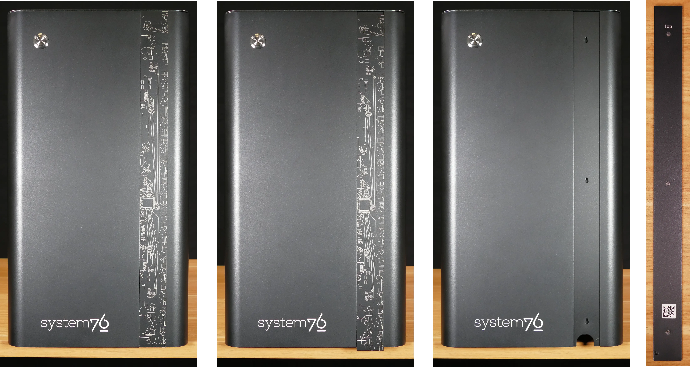
Removing the top case:
The top case can be removed to access the internal components.
Tools required: Cross-head (Phillips) screwdriver (optional)
Time estimate: 2 minutes
Difficulty: Easy ●
Steps to remove the top case:
- Remove the eight outer screws holding the top case onto the machine.
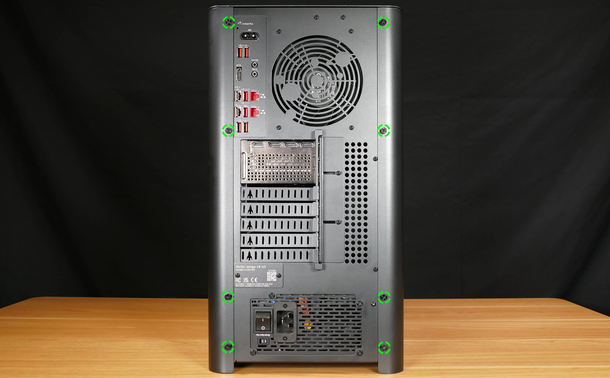
- Slide the top case up and off of the machine.
Removing the side fan mount:
The side fan mount holds the two 140mm side intake fans, which cool the GPU(s) and 2.5" storage drives.
Tools required: Cross-head (Phillips) screwdriver
Time estimate: 5 minutes
Difficulty: Easy ●
Steps to remove the side fan mount:
- Follow the steps above to remove the top case.
- Unplug the side fan connector from the top of the side fan mount, next to the back of the chassis.

- Unscrew the four screws holding the side fan mount in place (two on the front of the case, two on the back).

- Pull the side fan mount out of the chassis.
Replacing the side intake fans:
The 140mm side intake fans can be independently replaced.
Part numbers:
- Each side fan is a 140mm Be Quiet! Silent Wings 4 (model number
BQ SIW4-14025-MF-PWM).
Tools required: Cross-head (Phillips) screwdriver
Time estimate: 10 minutes
Difficulty: Easy ●
Steps to replace the side intake fans:
- Follow the steps above to remove the top case and remove the side fan mount.
- Unscrew the four screws holding the fan in place.
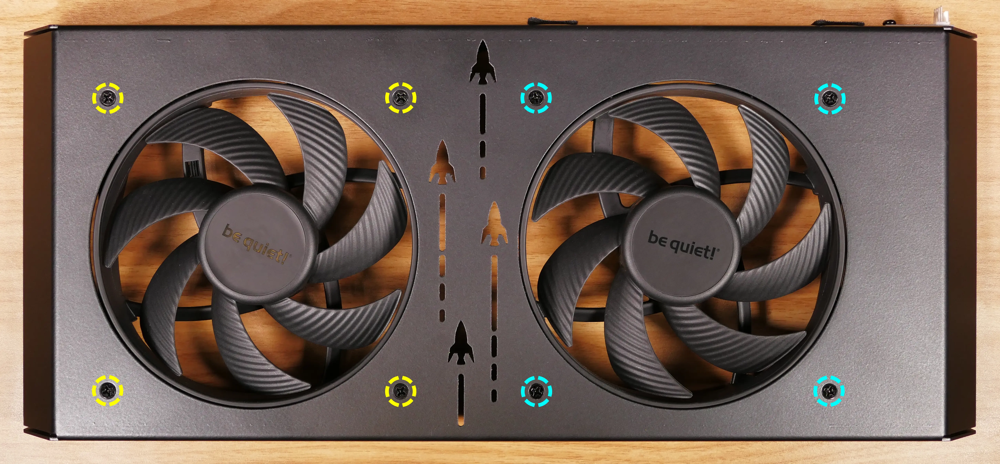
- Free the fan cable from the velcro straps and unplug it from the splitter board.

- When installing the new fan, orient the spinning side out of the chassis and the stationary side into the chassis.
- The fan's cable should point towards the same long edge as the splitter board, but the opposite short edge.
Adding/removing 2.5" storage drives:
Thelio Mega R4-N3 supports up to four 2.5" SATA III drives.
Tools required: Cross-head (Phillips) screwdriver
Time estimate: 8 minutes
Difficulty: Easy ●
Steps to add/remove 2.5" storage drives:
- Follow the steps above to remove the top case and remove the side fan mount.
- Unscrew the two screws securing the drive bay's cover.
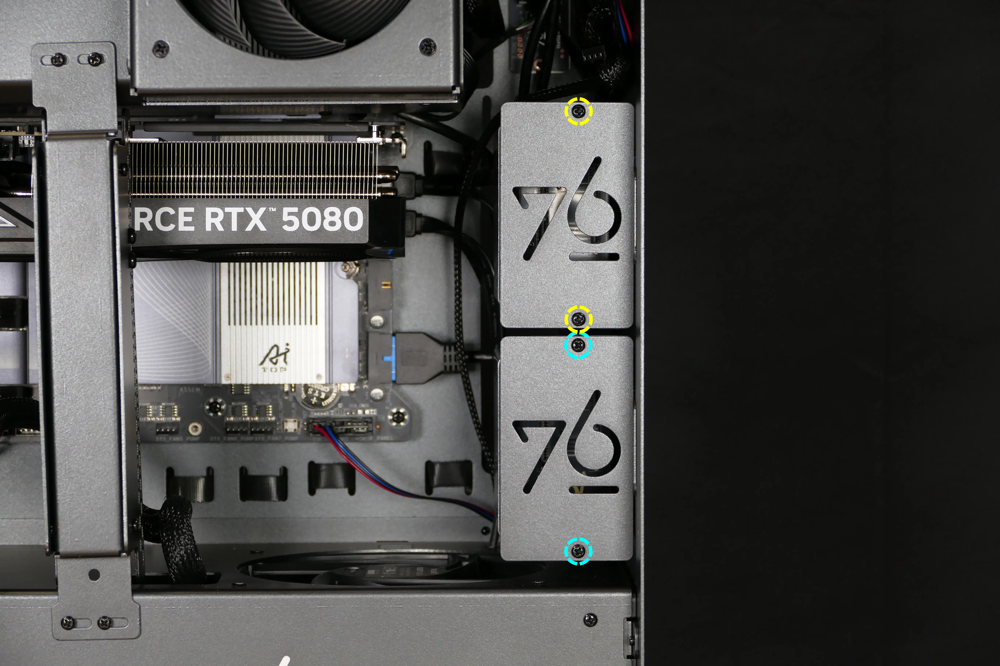
- If you are adding a new drive, pop out the black plastic ring on the top crossbar and slide out four screws (per drive).
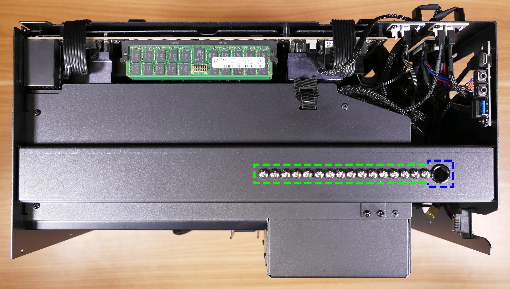
- Insert four screws into each 2.5" storage drive you wish to install.
- Slide each 2.5" drive into one of the slots leading to the drive bay's SATA backplane.

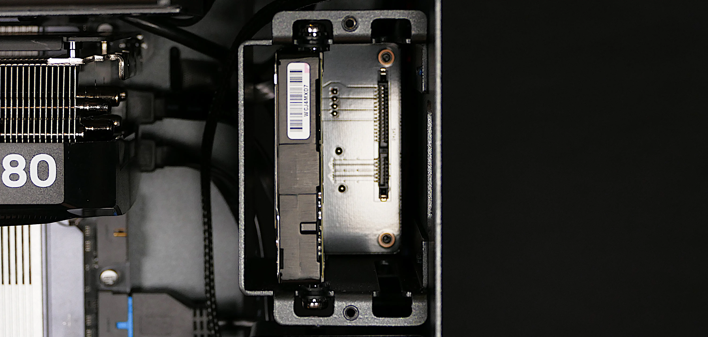
- Replace the black plastic screw ring and the 2.5" drive bay cover, followed by the side fan mount and top case.
Removing the GPU brace:
The GPU brace provides mounting points for GPU fingers, which can optionally support graphics cards or other PCI Express devices. GPU fingers are primarily intended to avoid shipping damage, and the system can be run without GPU fingers if they don't fit an upgraded GPU.
Tools required: Cross-head (Phillips) screwdriver
Time estimate: 7 minutes
Difficulty: Easy ●
Steps to remove the GPU brace:
- Follow the steps above to remove the top case and remove the side fan mount.
- Remove the four screws holding the GPU brace in place (two at the top attached to the CPU duct, and two at the bottom attached to the PSU chamber).
- As visible in the photo below, the elongated screw holes allow the GPU brace to be slightly rotated, which can allow the GPU finger(s) to better support the exact position of the GPU.

- Pull the GPU brace out of the chassis.
Steps to adjust the GPU fingers:
- Unscrew the four screws (two on each side) holding the GPU finger onto the GPU brace, highlighted cyan below.
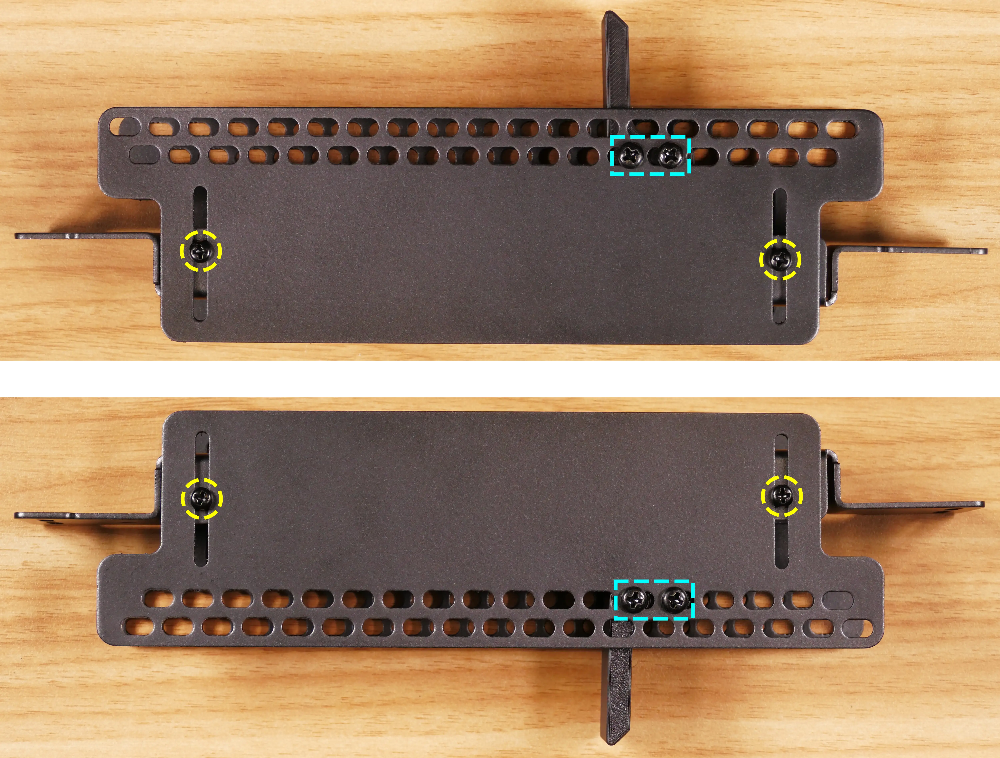
- Move the GPU finger to the desired position, then re-attach the screws.
- Repeat for any additional GPU fingers present.
- To adjust the depth the GPU brace extends into the chassis, loosen the screws highlighted yellow above, then tighten them when the GPU brace is in the desired position.
Removing the CPU duct:
The CPU duct guides airflow through the CPU cooler. It covers the CPU and RAM slots on the motherboard.
Tools required: Cross-head (Phillips) screwdriver
Time estimate: 9 minutes
Difficulty: Easy ●
Steps to remove the CPU duct:
- Follow the steps above to remove the top case, remove the side fan mount, and remove the GPU brace.
- Unscrew the four back screws holding the CPU duct in place.
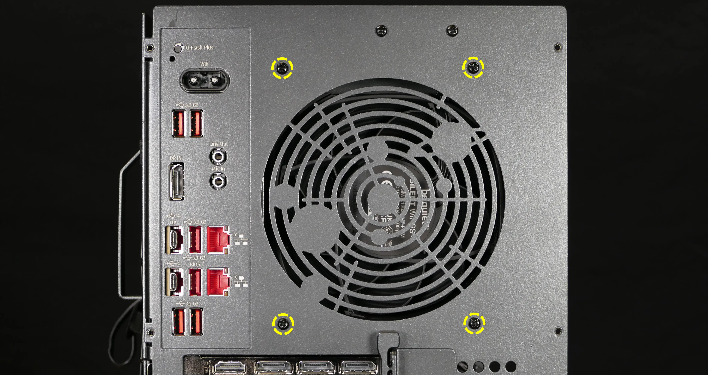
- Unplug the braided cables for the two CPU duct-mounted fans, highlighted light blue below.
- The non-braided Y-cable does not need to be unplugged at this stage.

- While holding the CPU duct up, unscrew the two top screws connecting it to the top crossbar, highlighted green above.
- Pull the CPU duct out of the machine.
Replacing a GPU:
Thelio Mega R4-N3 contains four PCI Express 5.0 x16 slots. Factory configurations are offered with up to three GPUs. Four GPUs may function, depending on space and power constraints.
Tools required: Cross-head (Phillips) screwdriver
Time estimate: 15 minutes
Difficulty: Easy ●
Steps to replace a GPU:
- Follow the steps above to remove the top case, remove the side fan mount, remove the GPU brace.
- To access the top PCIe slot (which is the primary GPU slot), also remove the CPU duct.
- If you're removing a GPU, unplug the GPU power cable from the right side of the card. Hold down the latch on the connector while unplugging the cable.
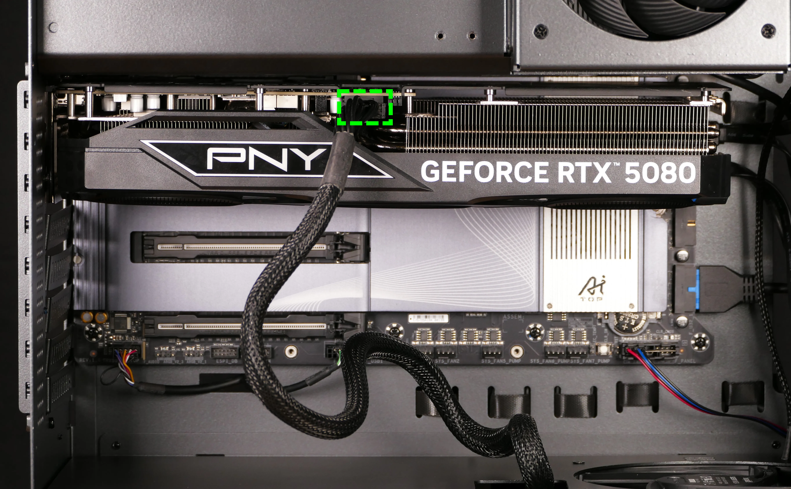
- Loosen the two back screws holding the PCIe bracket in place, then slide the PCIe bracket open.
- You can optionally remove the screws and PCIe bracket instead.

- Press the latch on the motherboard to free the PCIe connection, then pull the card out of the slot.
- The top PCIe slot (the primary GPU slot) can also be freed by pressing the square quick-release button above the M.2 heatsink, highlighted red below.

- When installing new GPUs, utilize the top slot first. Other slots can be utilized in the order that best fits the GPUs, since they all run at equal bandwidth.
- After inserting the new GPU into its slot, connect the power cables.
- The maximum number of power cables are preinstalled in your system, but some may be secured with velcro straps within the PSU chamber if they weren't used in the factory configuration.
- Once all GPUs are installed, replace the back PCIe bracket, CPU duct, GPU brace, side fan mount, and top case.
Replacing the M.2 drives:
Thelio Mega R4-N3 has four M.2 slots, which all support PCIe NVMe Gen 5 x4.
Tools required: Cross-head (Phillips) screwdriver
Time estimate: 23 minutes
Difficulty: Medium ●
Steps to replace the M.2 drives:
- Follow the steps above to remove the top case, remove the side fan mount, remove the GPU brace, and remove the GPUs.
- Remove the M.2 heatsink by rotating the latch clockwise, then holding the latch down while pivoting the heatsink away from the latch.
- It may take some pressure to break the seal of the thermal tape; pull slowly to avoid breaking the thermal tape.
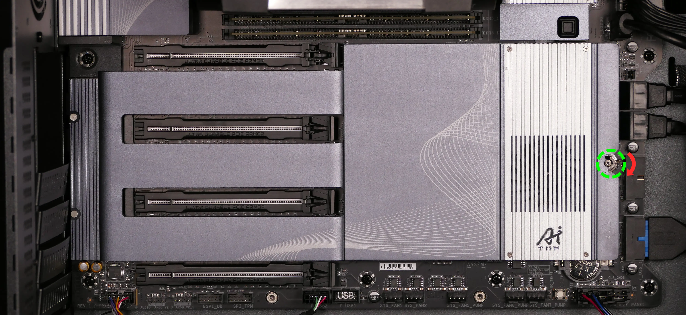
- To remove an M.2 drive, rotate the latch, pull the end of the M.2 drive slightly away from the thermal tape on the motherboard, then pull the drive out of the slot.
- The drive may lift away from the motherboard on its own if the thermal tape is not present.
- Thermal tape is not present behind Slot D.

- If utilizing a slot for the first time, peel the plastic covering off of the thermal tape behind the slot on the motherboard, and off of the thermal tape in the corresponding position on the heatsink.
- Thermal tape is not present behind Slot D on the motherboard (but is present for Slot D on the heatsink).
- In the below photos, Slots C and D have thermal tape that's ready to use, while Slots A and B still have the plastic coverings applied.


- To install an M.2 drive, insert its keyed end into the slot, then press the opposite end down onto the latch until it clicks into place.
- If the latch does not rotate on its own when the drive is pressed down, rotate it manually to allow the drive to be seated underneath it.
- Replace the M.2 heatsink, GPU(s), CPU duct, GPU brace, side fan mount, and top case.
Replacing the CMOS battery:
The CMOS battery supplies power to the system's CMOS chip. UEFI settings and the computer's hardware clock are stored on the CMOS. If your system doesn't boot, you can reset the CMOS to force a low-level hardware reset. If your clock is constantly resetting, it's likely your CMOS battery needs to be replaced.
Warning (ingestion hazard): Keep batteries out of reach of children. Death or serious injury can occur if ingested. If a battery is suspected to be swallowed or inserted inside any part of the body, seek immediate medical attention. In the US, you can also call the National Battery Ingestion Hotline for guidance: +1 (800) 498-8666
Part numbers:
- The CMOS battery is a standard KTS CR2032 battery.
Tools required: Cross-head (Phillips) screwdriver, plastic spludger tool
Time estimate: 27 minutes
Difficulty: High ●
Steps to replace the CMOS battery:
- Follow the steps above to remove the top case, remove the side fan mount, remove the GPU brace, remove the GPUs, and remove the M.2 heatsink.
- Use a small plastic tool to pry the CMOS battery out of the slot from the right side.

- Insert the new CMOS battery into the slot with the rounded side facing inward and the label facing outward.
- Reinstall the M.2 heatsink, GPUs, GPU brace, side fan mount, and top case.
Replacing the CPU fans:
Thelio Mega R4-N3 contains four CPU fans: two mounted in the CPU duct, and two mounted on the CPU cooler heatsink.
Part numbers:
- CPU duct fans: 2x Be Quiet! Silent Wings 4 (
BQ SIW4-12025-MF-PWM) - CPU cooler heatsink fans: 2x Arctic Freezer 4U fans
- Included with the Arctic Freezer 4U-M CPU cooler
Tools required: Cross-head (Phillips) screwdriver
Time estimate: 25 minutes
Difficulty: Medium ●
Steps to replace the duct-mounted CPU fans:
- Follow the steps above to remove the top case, remove the side fan mount, remove the GPU brace, and remove the CPU duct.
- Free the cables from the velcro strap on the top of the CPU duct.
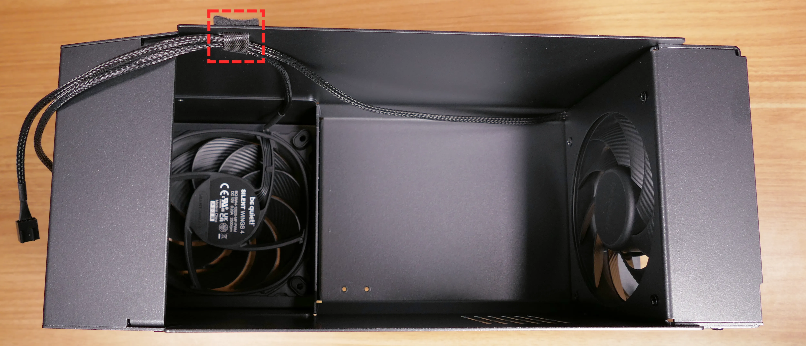
- To remove the side CPU duct fan, unscrew the four fan screws from the outside of the CPU duct.
- When reinstalling the fan, the spinning side faces outward, and the cable goes on the corner closest to the velcro strap.
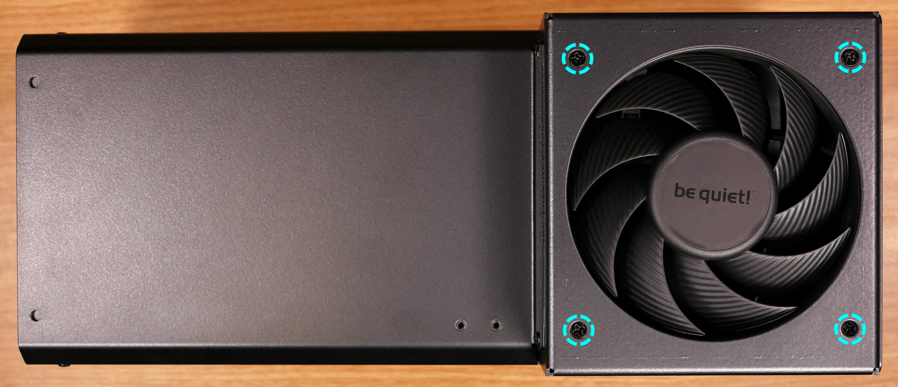
- To remove the back CPU duct fan, unscrew the four screws holding the fan bracket into the duct (two on the top, and two on the bottom).

- Push the fan bracket slightly into the duct, then pull it out the side of the duct.
- Unscrew the four fan screws from the fan bracket to remove the fan.
- When reinstalling the fan, the spinning side should face into the CPU duct, with the bracket's cable cutout closest to the velcro strap.
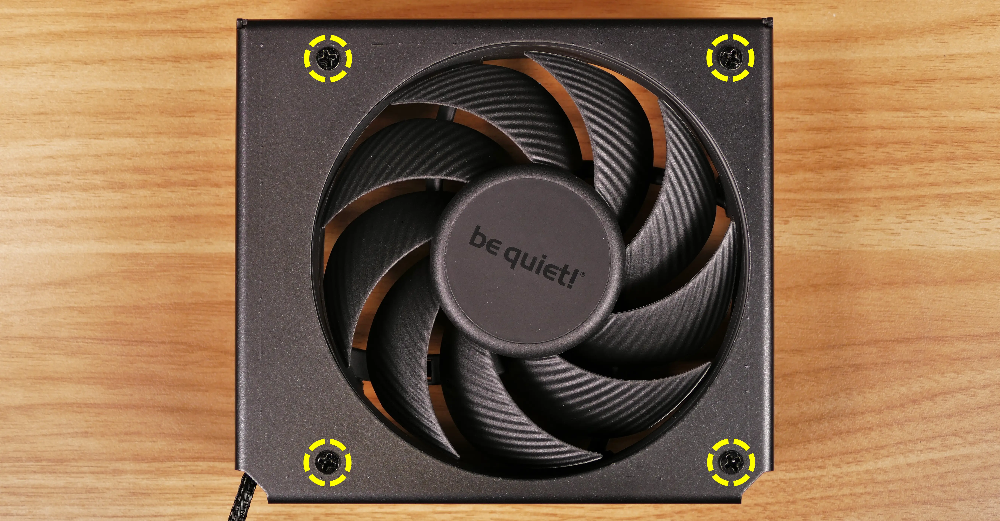
Steps to replace the cooler-mounted CPU fans:
- Follow the steps above to remove the top case, remove the side fan mount, remove the GPU brace, and remove the CPU duct.
- Disconnect the rear cooler fan from the front cooler fan's Y-cable, and unplug the front cooler fan's Y-cable from the splitter board.
- The heatsink fan cable connection points are highlighted red below.
- In the below photo, the GPU and top crossbar have been removed for better visibility.
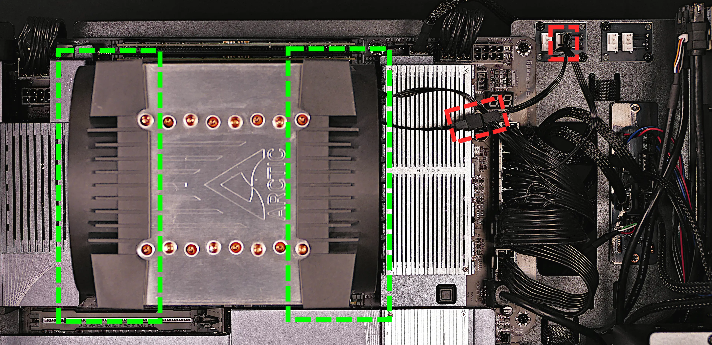
- Pull the fans (highlighted green above) directly out of the case, sliding them off the heatsink.

- When reinstalling the CPU heatsink fans, the fan with a normal cable goes on the back of the heatsink, while the fan with a Y-cable goes on the front.
Replacing the CPU cooler and CPU:
The CPU cooler dissipates heat from the CPU to the heatsink, where the CPU fans expel it from the system. Depending on your climate and the age of the machine, replacing the thermal paste between the CPU and the cooler/heatsink may help the system run cooler. The thermal paste should generally also be replaced whenever the CPU cooler is removed from the CPU for any reason.
Part numbers:
- CPU cooler: Arctic Freezer 4U-M
- CPU socket: AMD sTR5 socket
Tools required: Cross-head (Phillips) screwdriver (long), AMD Threadripper torque tool or compatible 1.5 Nm (13.275 in-lb) torque 3.95mm six-point star (Torx 20) screwdriver, thermal paste
Time estimate: 35 minutes
Difficulty: High ●
Steps to remove the CPU cooler/thermal paste:
- Follow the steps above to remove the top case, remove the side fan mount, remove the GPU brace, remove the CPU duct, and remove the cooler-mounted CPU fans.
- While holding the cooler in place so it doesn't fall, loosen the four CPU cooler screws.
- The screws are held captive and will not fully detatch from the cooler.

- The cooler will come away from the CPU.
- Using a paper towel, clean the existing thermal paste off of the heatsink and CPU.
- Due to the design of the heatsink, some thermal paste may remain between the heatsink pipes. Only the flat section of the pipes that makes contact with the CPU needs to be cleaned.
- You may also use a small amount of rubbing alcohol if the old paste is dried or difficult to remove.
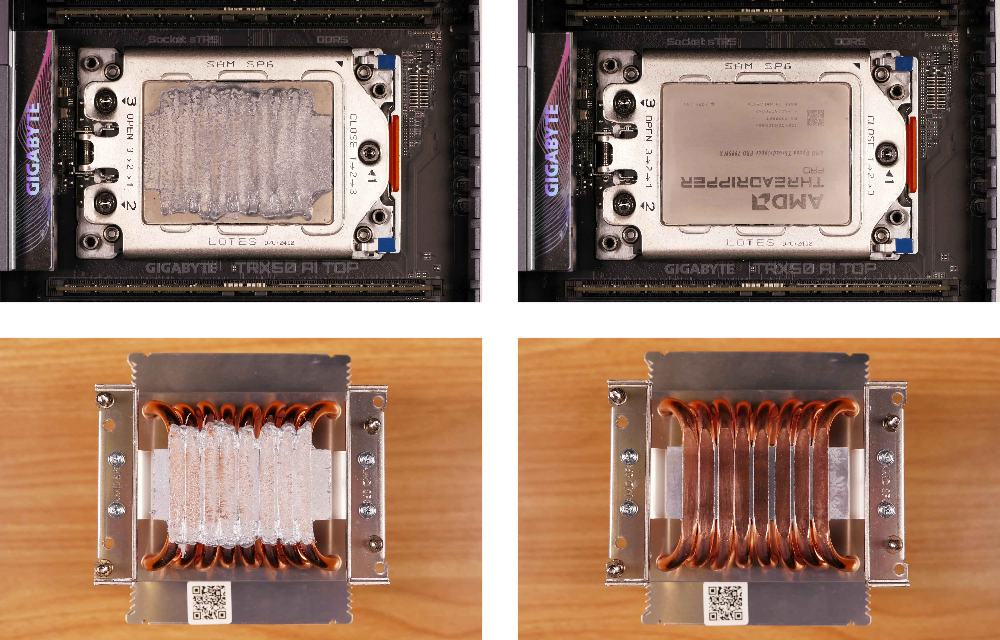
Steps to replace the CPU:
- Place the computer on its side so the motherboard is facing up.
- Using the AMD Threadripper torque screwdriver (or a compatible T20 screwdriver), loosen the three CPU bracket Torx screws in reverse order of the printed numbers (starting with #3).
- The screws are held captive and will not come out of the bracket.
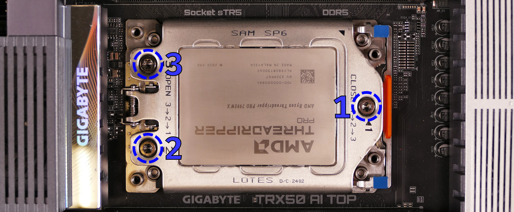
- The CPU bracket cover will spring up when all its screws are fully loosened.
- If the bracket cover only partially opens, you may need to loosen screws #2 and/or #3 more.

- Using the blue corner tabs (visible above), flip the orange CPU carrier frame up and away from the CPU socket.
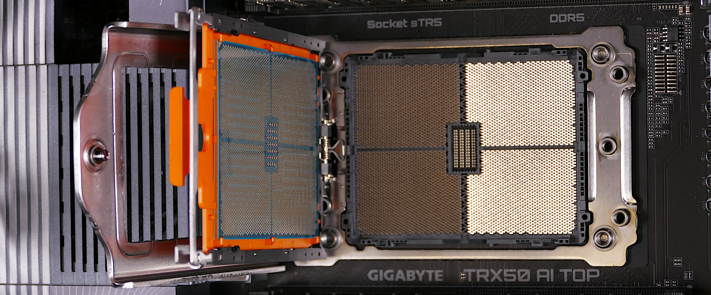
- Slide the CPU carrier tray out of the CPU bracket.
- Be careful not to bend any of the gold pins on the CPU socket, and do not touch the gold pads on the CPU.
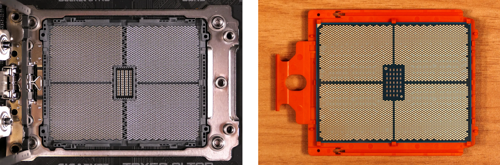
- Slide the new CPU's carrier tray into the CPU bracket.
- AMD Threadripper CPUs come with carrier trays, so removing the CPU from the tray is generally not necessary.
- Flip the CPU bracket back down onto the socket, gently pressing the blue tabs to seat the CPU carrier tray onto the motherboard.
- Flip the CPU bracket cover back down.
- Screw the three Torx screws back into place in order of the printed numbers (starting with #1).
- The AMD Threadripper-branded tool applies 1.5 Nm of torque. When the screw is tight enough, it will give way.
- If you're using a different screwdriver, use a torque tool to apply approximately the same amount of torque (1.5 Nm, or ~13.275 in-lb).
- If you're using a screwdriver without a torque tool, try to tighten all three screws evenly. After re-assembling the computer, run a RAM test to ensure the CPU is secured with the correct amount of force.
Steps to install the thermal paste/CPU cooler:
- Draw an
Xshape of thermal paste onto the CPU.

- Place the CPU cooler onto the CPU; while holding it in place, tighten the four screws.
- The two screws on the left side use the outer holes; the two screws on the right side use the inner holes.
- The air flow arrows stamped into the top of the heatsink should point towards the back of the chassis.
- Insert each screw partially, then finish tightening both.
- Set the computer upright, then reinstall the cooler-mounted CPU fans, CPU duct, GPU brace, side fan mount, and top case.
Replacing the RAM:
Thelio Mega R4 supports up to 512GB (8x64GB) of ECC DDR5 RAM DIMMs running at a maximum speed of 5600 MHz. If you've purchased new RAM, need to replace your RAM, or are reseating your RAM, follow these steps.
Tools required: Cross-head (Phillips) screwdriver
Time estimate: 17 minutes
Difficulty: Medium ●
Steps to replace the RAM:
- Follow the steps above to remove the top case, remove the side fan mount, remove the GPU brace, and remove the CPU duct.
- You can optionally remove the CPU cooler for easier access to the innermost RAM slots; it's been removed for better visibility in the below photo.
- To remove an existing RAM stick, flip the latches on each side away from the stick, then pull the stick out of the slot.

- Make sure the tabs on the left and right of the slot are open (pulled outwards), then insert the new RAM (or re-seat the existing RAM) into the slot.
- The RAM stick will only fit in one direction. The larger group of pins goes on the right side.
- Use the following guide for placement of the RAM sticks:

- Replace the CPU cooler (if necessary), CPU duct, GPU brace, side fan mount, and top case.
Opening the PSU chamber:
The PSU chamber houses the power supply unit (PSU) and its related cabling, and provides a mounting point for the bottom intake fan.
Tools required: Cross-head (Phillips) screwdriver
Time estimate: 12 minutes
Difficulty: Medium ●
Steps to open the PSU chamber:
- Follow the steps above to remove the top case, remove the side fan mount, and remove the GPU brace.
- Unplug the power cables from all installed GPUs.
- Unscrew the four side screws holding the PSU chamber's cover on.

- Pull the cover off of the PSU chamber.
- The bottom intake fan's cable does not need to be untied to access the inside of the PSU chamber, but can be untied for easier access.
Replacing the bottom intake fan:
The 140mm bottom intake fan can be independently replaced.
Part numbers:
- The bottom intake fan is a 140mm Be Quiet! Silent Wings 4 (model number
BQ SIW4-14025-MF-PWM).
Tools required: Cross-head (Phillips) screwdriver
Time estimate: 18 minutes
Difficulty: Medium ●
Steps to replace the bottom intake fan:
- Follow the steps above to remove the top case, remove the side fan mount, remove the GPU brace, and open the PSU chamber.
- Free the cable from the velcro loop (near the power button receptacle) and unplug it from the Thelio Io board.

- Unscrew the four screws holding the fan onto the top cover of the PSU chamber.

- Screw in the new fan.
- The fan should be oriented so the cable is closest to the cable cutout in the PSU chamber cover, with the spinning side facing down.
- Pass the fan's cable through the PSU chamber cover, plug the new fan into the
INTAKE FAN(FANOUT2) port on the Thelio Io board, and secure the excess cabling with the velcro loop. - Close the PSU chamber and reinstall the GPU brace, side fan mount, and top case.
Replacing the power supply:
The power supply unit (PSU) is modular and can be replaced with another unit of the same model. Different models may not be compatible with the cabling pre-installed in the Thelio Mega.
Part numbers:
- The default power supply is a Thermaltake Toughpower GF3 1650W Gold.
Tools required: Cross-head (Phillips) screwdriver
Time estimate: 20 minutes
Difficulty: High ●
Steps to replace the power supply:
- Follow the steps above to remove the top case, remove the side fan mount, remove the GPU brace, and open the PSU chamber.
- Unplug all of the modular cabling from the back of the PSU.
- Some of the cables may be easier to unplug after the PSU has been unscrewed/removed from the case.

- Unscrew the four screws holding the PSU in from the back of the case.

- Slide the PSU into the chassis and then pull it out of the PSU chamber.
- Insert the new PSU, setting it on top of the rubber post that holds it at the correct height.
- The replacement PSU should be installed with the fan facing the bottom of the case.
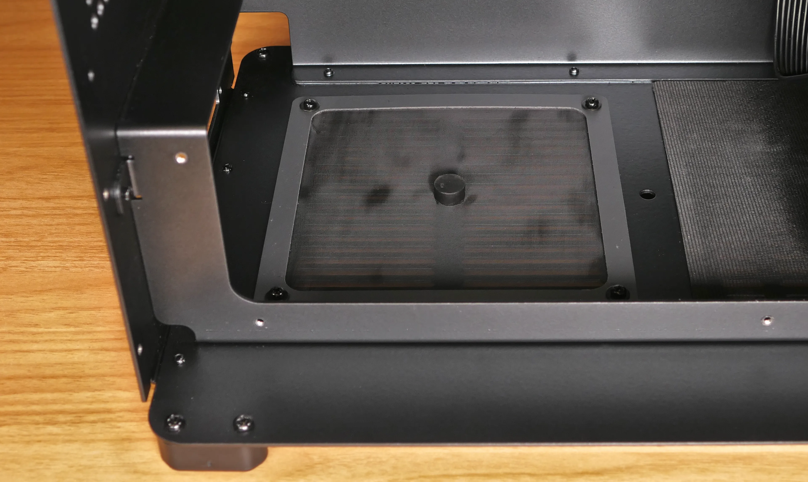
- Screw in the replacement PSU.
- You may need to hold the PSU up to the back of the chassis to align the screwholes while inserting the screws.
- Use the labels and pin counts on the cables and ports to ensure the power cables are reconnected to the new PSU in the proper locations.
- If the replacement PSU has a "Smart Zero Fan" switch, make sure it's switched on for the optimal fan curve.
Removing the top crossbar:
The top crossbar can be replaced for repair or removed for easier access to internal components.
Tools required: Cross-head (Phillips) screwdriver
Time estimate: 3 minutes
Difficulty: Easy ●
Steps to remove the top crossbar:
- Follow the steps above to remove the top case.
- Unscrew the top crossbar from the front of the chassis.

- Unscrew the top crossbar from the back of the chassis.

- Pull the top crossbar away from the chassis.
Replacing the Thelio Io board:
Named after Jupiter's moon Io, the Thelio Io daughterboard handles the front power button and fan control. If the Thelio Io board becomes defective, it can be replaced using the instructions below.
Part numbers:
- Thelio Mega R4-N3 uses Thelio Io version 2 (PCB revision thelio_io_2.3).
Tools required: Cross-head (Phillips) screwdriver
Time estimate: 25 minutes
Difficulty: High ●
Steps to replace the Thelio Io board:
- Follow the steps above to remove the top case and remove the side fan mount.
- It's optional but recommended to also remove the GPU brace and remove the CPU duct for easier access to the cabling.
- Use the cutout on the front of the chassis to unplug all cabling from the Thelio Io board.
- The second-from-top connector (
POWER1) requires pulling the white tab while unplugging. - The bottom connector (
USB) requires holding the black clip while unplugging.
- The second-from-top connector (
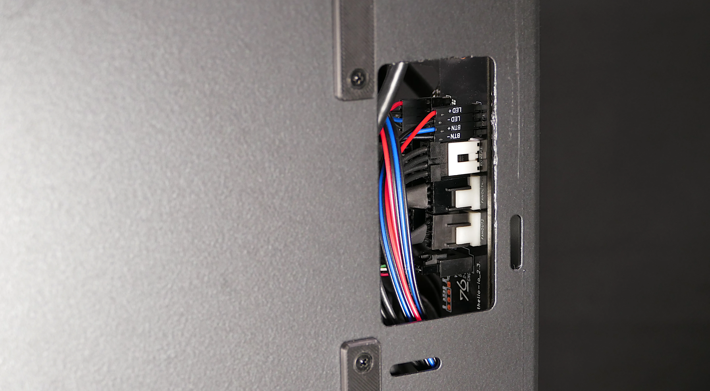
- Unscrew the two screws holding the daughterboard on from the right side of the chassis.

- Screw in the new Thelio Io board and reconnect the wiring.
Thelio Io wiring guide:

-
When wiring the Thelio Io board, refer to the port labels and the following guide.
FANOUT1/CPU FAN- to the left fan splitter (connecting to the cooler-mounted CPU fans).FANOUT2/INTAKE FAN- to the bottom intake fan.FANOUT3/GPU FAN- to the side fan mount's fan splitter.FANOUT4/AUX FAN- to the right fan splitter (connecting to the duct-mounted CPU fans).FANIN1/MOTHERBOARD FAN INPUT- to theCPU_FANheader at the top right of the motherboard, highlighted cyan below.

POWER1/POWER INPUT- to the power supply via a Molex (large 4-pin) to Berg (small 4-pin) adapter cable.- The white plastic clip needs to be held away from the connector to unplug this cable from the Thelio Io board.
- The adapter cable may be a Y-cable; the other small end can be left unplugged.
PFP1/FRONT PANEL- to the power button receptacle on the front panel.- On the Thelio Io board, the wire color order (from top to bottom) is red, black, blue, black.
- On the power button receptacle, the wire color order (from left to right) is red, black, blue, black.
PMB1/MOTHERBOARD- to the first four pins of theF_PANELheader at the bottom right of the motherboard, highlighted green below.- On the Thelio Io board, the wire color order (from top to bottom) is red, black, blue, black.
- On the motherboard, the wire color order (from left to right) is red, black, blue, black.
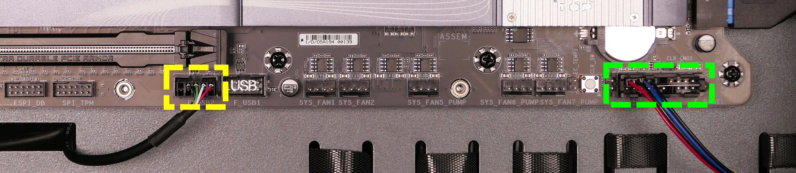
USB- to theF_USB2header on the bottom edge of the motherboard, highlighted yellow above.- A black plastic clip needs to be held down to unplug this cable from the Thelio Io board.
- This port can alternatively be connected to the
F_USB1header on the motherboard if theF_USB2header becomes defective.
Replacing the SATA backplanes:
Each of the two SATA backplanes provides two 2.5" SATA III data and power connectors for its corresponding 2.5" drive cage.
Part numbers:
- The part number and version for the SATA backplane is thelio-io-sata_2.2.
Tools required: Cross-head (Phillips) screwdriver
Time estimate: 15 minutes
Difficulty: Medium ●
Steps to replace the SATA backplanes:
- Follow the steps above to remove the top case and remove the side fan mount, then remove the 2.5" drive cage cover and all 2.5" SATA drives in front of the backplane(s) you're replacing.
- Use the cutout on the right side of the chassis to unplug the 4-pin Berg power connector (highlighted cyan below) and the two SATA data cables (highlighted green below) from the SATA backplane(s).
- View of the cables is partially obstructed by other nearby cables.
- The white clip needs to be held away from the connector while unplugging the power cable.

- Unscrew the four screws holding the drive cage onto the chassis, then remove the drive cage from the chassis.
- The top four screws are for the top drive cage; the bottom four screws are for the bottom drive cage.
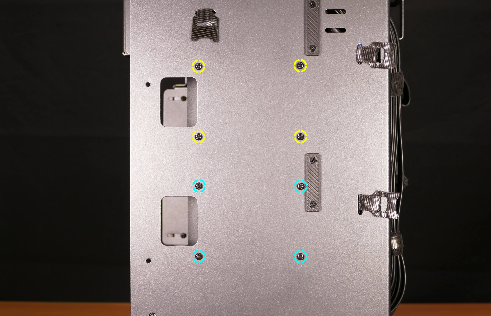
- Unscrew the four SATA backplane screws from the drive cage, then push the SATA backplane out through the front of the drive cage.
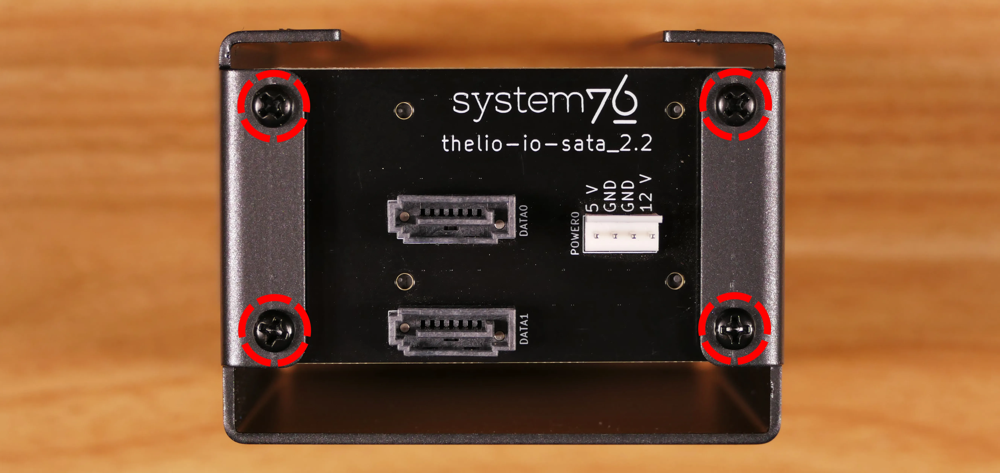
- Place the new SATA backplane into the drive cage and secure it with the four SATA backplane screws, then reinstall the drive cage.
- Plug the 4-pin Berg power connector and SATA data cables into the SATA backplane.
- The order of the SATA data cables shouldn't matter as long as your operating system and software is configured to address disks by UUID (e.g.
/dev/disk/by-id/...) instead of by letter (e.g./dev/sd_). - By default, the ports connect as follows:
- Top SATA backplane (top row of motherboard ports):
DATA0connects to motherboard port 1.DATA1connects to motherboard port 0. - Bottom SATA backplane (bottom row of motherboard ports):
DATA0connects to motherboard port 3.DATA1connects to motherboard port 2.
- Top SATA backplane (top row of motherboard ports):
- The motherboard's SATA ports can be accessed from behind via the cabling cutout. In the below photo, the GPU brace, CPU duct, and GPU have been removed to show the ports from the front.
- The order of the SATA data cables shouldn't matter as long as your operating system and software is configured to address disks by UUID (e.g.

- Reinstall the side fan mount, any 2.5" drives that were removed, the 2.5" drive cage cover(s), and the top case.
Replacing the top I/O:
Thelio Mega R4-N3 includes a top I/O module providing audio and USB ports. If the top ports are damanged or become defective, they can be replaced using the steps below.
Part numbers:
- The top I/O module's part number is
MYS7523 Rev. 4.0.
Tools required: Cross-head (Phillips) screwdriver
Time estimate: 20 minutes
Difficulty: Medium ●
Steps to replace the top I/O:
- Follow the steps above to remove the top case, remove the CPU duct, and remove the side fan mount.
- Unplug the
F_AUDIOheader at the bottom-left corner of the motherboard, highlighted cyan below.
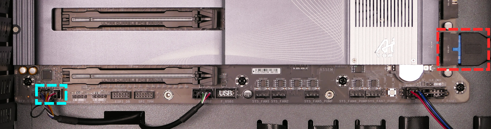
- Unplug the
F_U32_1header near the bottom-right corner of the motherboard, highlighted red above. - Unplug the
F_U320Gheader near the right side of the motherboard just above the graphics card and M.2 heatsink, highlighted green below.

- Unscrew the two front screws holding the top I/O board onto the chassis.

- Remove the top I/O board from the system.
- Insert the new top I/O board into the system and screw it into place.
- Reconnect the audio and USB headers.
- Replace the side fan mount, CPU shroud, and top case.
Troubleshooting the power button:
If the front power button doesn't power the machine on or doesn't light up when the system is powered on, try the following troubleshooting steps:
- Ensure the system powers on normally using the internal power button.
- Reseat the front power button to ensure it's making proper contact.
- Check the wiring for the front power button.
- Replace the front power button, if necessary.
Tools required: Cross-head (Phillips) screwdriver
Time estimate: 20 minutes
Difficulty: Medium ●
Steps to power the machine on using the internal power button:
- Follow the steps above to remove the top case.
- Ensure the system is plugged into power, and the power supply switch is in the 1 (On) position.
- Push the small button labeled
POWERon the Thelio Io board.
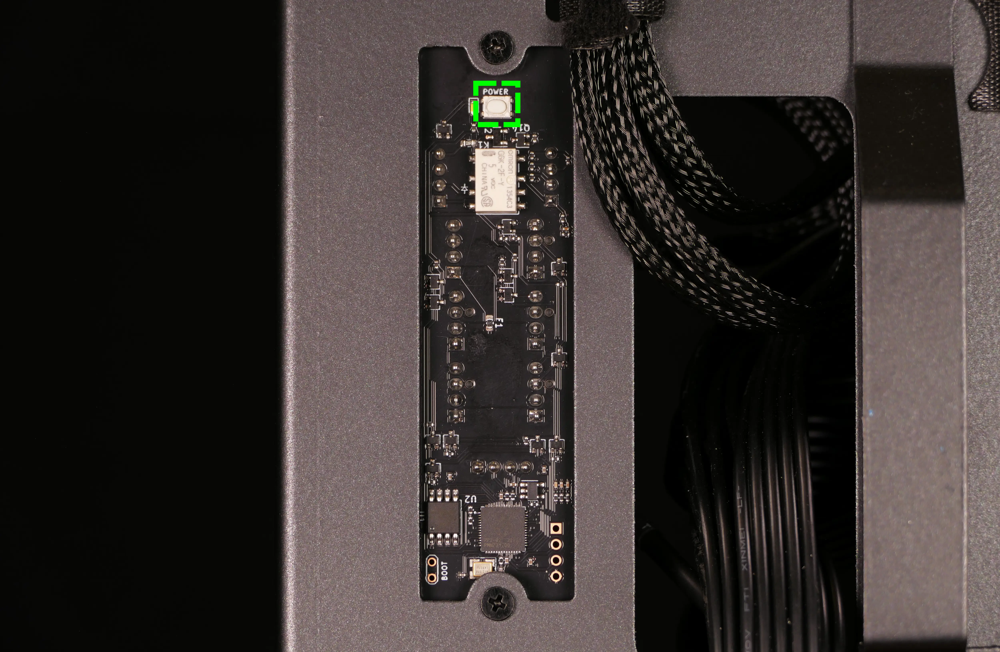
- If the Thelio Io
POWERbutton powers the machine on, then the issue is either the front power button or its connection to the Thelio Io board. Check the front power button wiring. - If the Thelio Io
POWERbutton does not work, press the power (⏻) button near the top right of the motherboard.- The CPU duct has been removed in the below photo for better visibility, but does not need to be removed to reach the motherboard power (
⏻) button.
- The CPU duct has been removed in the below photo for better visibility, but does not need to be removed to reach the motherboard power (
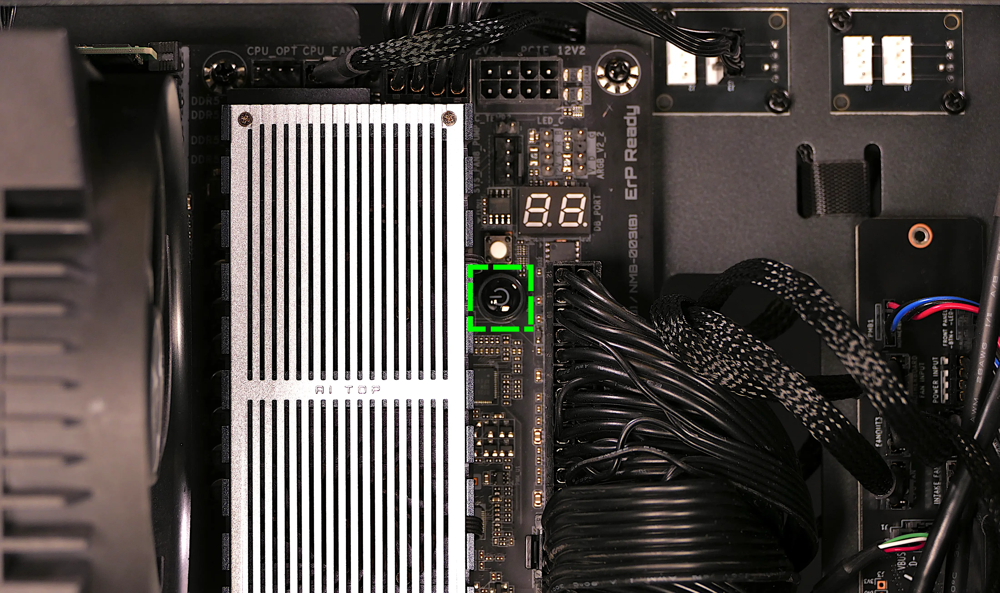
- If the motherboard power (
⏻) button works, but the Thelio IoPOWERbutton does not work, then the issue is either the Thelio Io board or its connection to the motherboard. Check the wiring between the Thelio Io board and the motherboard. - If the motherboard power (
⏻) button does not work, then the issue may be the motherboard, or it may be the power supply or its connection to the motherboard. Ensure all connectors are plugged in properly and that the power supply is switched to the 1 (On) position.
Steps to check the front power button wiring:
- Follow the steps above to remove the top case.
- You can optionally remove the CPU duct for easier access to the power button receptacle and its wiring.
- On the back of the power button, the four pins should be connected to the four-wire connector as follows:

- On the front power button receptacle, the four-pin connector should have the red wire on the left and the black wire on the right.
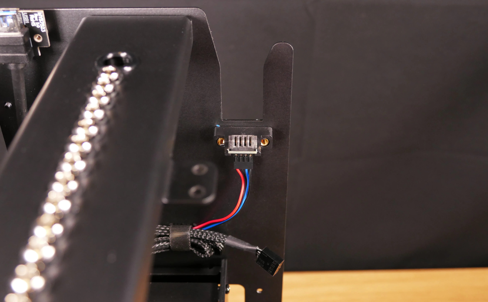
- The front power button receptacle should plug into the PFP1 port on the Thelio Io board, with the red wire on the top (see the Thelio Io wiring guide).
Steps to replace the power button:
- Follow the steps above to remove the top case.
- Follow the instructions in the Replace the Thelio Power Button support article.